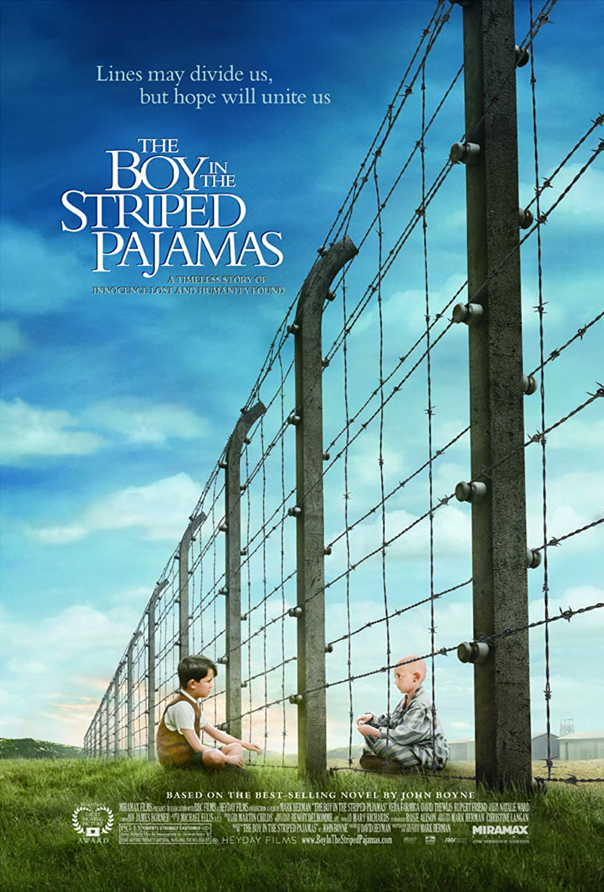

The amazing true life story of Desmond Doss, the first conscientious objector ever to be awarded the Medal of Honor. A 7th Day Adventist who believed WWII was a just cause- even though killing was not- Doss was the only American soldier to serve on the front lines without a weapon, and single-handedly saved the lives of 75 men. Blood splatters, bodies are ripped in two and intestines fly in Mel Gibson’s Hacksaw Ridge, and yet the movie is oddly about a man who decried violence and was so resolute that he refused to even touch a weapon--even when going to battle in Okinawa. Though flawed, Hacksaw Ridge is an enjoyable, old-school war movie splashed with a dose of modern sentiment (and gore).